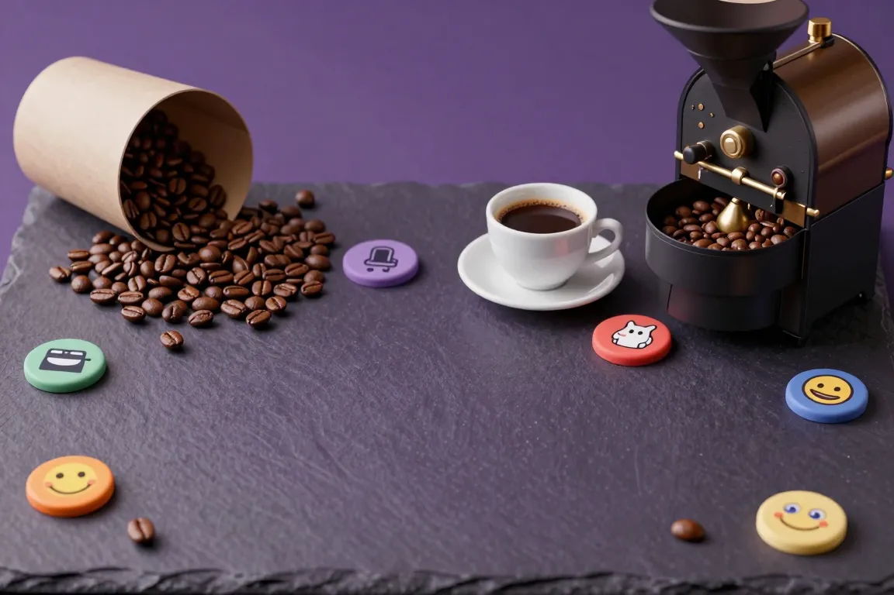

веб · 2015– · также: Чат-сервер, Сервер сообщества
Тёмное чат-приложение для сообщества: лента круглых значков серверов, список текстовых и голосовых каналов, поток сообщений в порядке времени с аватарами и эмодзи-реакциями под каждым сообщением.

Главная идея
Сообщество живёт в комнате, которая всегда открыта, а разговор течёт в реальном времени, а не в ветках.
Принципы дизайна
Берите три колонки: лента 72px с круглыми значками серверов, список каналов 240px и поток сообщений.
Называйте текстовые каналы с # и голосовые со значком динамика.
Показывайте каждую группу сообщений с круглым аватаром 40px, цветным именем пользователя, временной меткой и текстом под ним.
Ставьте эмодзи-реакции под сообщением маленькими таблетками со счётчиком.
Берите тёмно-серый фон и сине-фиолетовый фирменный цвет для активных элементов.
Давайте каждой роли цвет и набирайте имя пользователя этим цветом.